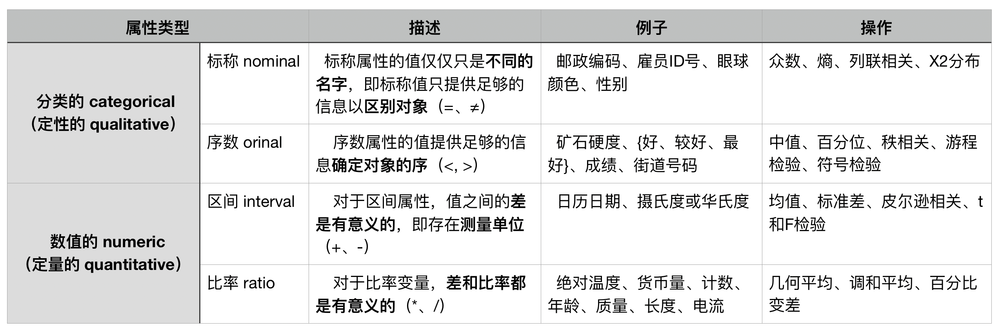
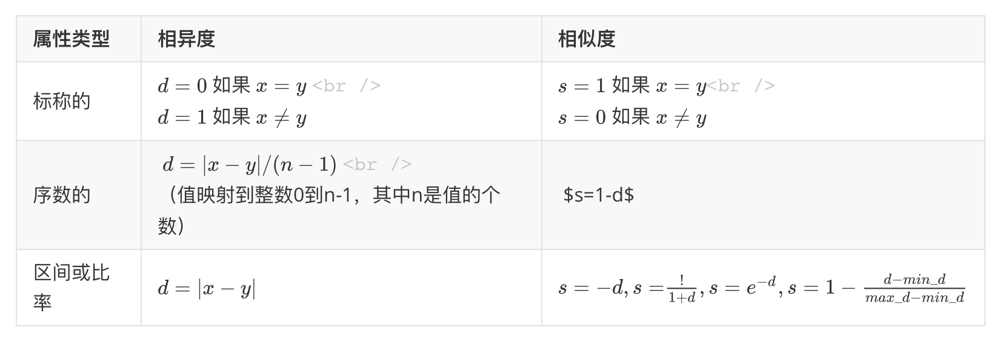

Data概念篇DM（二）数据
- 参《数据挖掘导论（完整版）》第二章
数据类型
- 数据集可以看作数据对象的集合。
属性
什么是属性？
- 属性（attribute）是对象的性质或特性，因对象而变，随时间而变。
- 测量标度（measurement scale）是将数值或符号值与对象的属性相关联的规则（函数）。
属性类型
- 通常将属性的类型称为测量标度的类型。
属性的不同类型

用值的个数描述属性
- 离散的（discrete），二元属性（Binary attribute）
- 连续的（continuous）
非对称的属性
- 非对称的属性（asymmetric attribute）
数据集的类型
- 数据集的一般特性
- 维度（dimensionality）
- 稀疏性（sparsity）
- 分辨率（resolution）
- 记录数据
- 事务数据（transaction data）、购物车数据（market basket data）
- 数据矩阵
- 稀疏数据矩阵：文档-词矩阵（document-term matrix）
- 基于图形的数据
- 带有对象之间联系的数据：如链接的网页
- 具有图形对象的数据
- 有序的数据
- 时序数据（sequential）/ 时间数据（temporal data）
- 序列数据（sequence data）
- 时间序列数据（time series data）
- 空间数据
数据质量
- 两个问题：
- 数据质量问题的检测和纠正（数据清理 data cleaning）；
- 使用可以容忍低质量数据的算法。
测量和数据收集问题
- 测量误差（measurement error）和数据收集错误（data collection error）
- 噪声（测量误差的随机部分）和伪像（artifact，更确定性现象结果的数据错误）
- 精度（precision）、偏倚（bias）、准确率（accuracy）
- 离群点（outlier）、异常（anomalous）
- 遗漏值
- 处理方法：删除数据对象或属性；估计遗漏值；在分析时忽略遗漏值
- 不一致的值
- 重复：去重复（deduplication）
关于应用的问题
- 时效性和相关性
- 抽样偏倚（sampling bias）
数据预处理
- 属性（attribute）：特征（feature）、变量（variable）
聚集
- 聚集（aggregation）：将两个或多个对象合并成单个对象。
- 可以看作是删除属性或压缩特定属性不同值个数的过程
- 动机：
- 数据规约减小数据，减小内存需求和处理时间
- 通过高层视图，起到了规范或标度转换的作用
- 聚集后行为更加稳定
抽样
- 抽样是一种选择数据对象子集进行分析的常用方法，抽样具有代表性。
- 抽样方法：
- 简单随机抽样（sample random sampling）：无放回/有放回
- 分层抽样（stratified sampling）
- 渐进抽样（progressive sampling）、自适应（adaptive）
维规约
- 维规约：通过创建新属性，将一些旧属性合并在一起来降低数据集的维度（特征子集选择或特征选择）
- 好处
- 使模型更容易理解；
- 更容易让数据可视化；
- 降低了数据挖掘算法的时间和内存需求。
- 维灾难：高维数据，分类准确率降低，聚类质量下降
- 维规约的线性代数技术：主成分分析（Principal Components Analysis, PCA）、奇异值分解（Singular Value Decomposition, SVD）
特征子集选择
- 存在，冗余特征、不相关特征
- 理想方法：将所有可能的特征子集作为感兴趣的数据挖掘算法的输入，然后选取产生最好结果的子集。
- 嵌入方法（embedded approach）：算法本身决定使用哪些属性和忽略哪些属性
- 过滤方法（filter approach）
- 包装方法（wrapper approach）
特征创建
- 特征提取（feature extraction）：由原始数据创建新的特征集
- 映射数据到新的空间
- 傅立叶变换（Fourier transform）、小波变换（wavelet transform）
- 特征构造
离散化和二元化
离散化（discretization）、二元化（binarization）
连续属性离散化
- 非监督离散化
- 等宽（equal width）、等频率（equal frequency）、等深（equal depth）、K均值、目测监测数据
- 监督离散化
- 熵（entropy）
- $e_i=-\sum^k_{j=1}P_{ij}\log_2P_{ij}$
- $e=\sum^n_{i=1}w_ie_i$
- 熵（entropy）
- 非监督离散化
变量转换
- 变量转换（variable transformation）
- 简单函数
- 规范化（standardization）或标准化（normalization）
相似性和相异性的度量
- 常用邻近度（proximity）表示相似性或相异性。
基础
- 定义
- 相似度（similarity）、相异度（dissimilarity）
- 距离
简单属性之间的相似度和相异度

数据对象之间的相异度
- 距离
- 欧几里得距离（Euclidean distance）：$d(x,y)=\sqrt{\sum^n_{k=1}(x_k-y_k)^2}$
- 距离矩阵（distance matrix）
- 闵可夫斯基距离（Minkowski distance）：$d(x,y)=(\sum^n_{k=1}|x_k-y_k|^r)^{1/r}$
- $r=1$，汉明距离（Hamming distance）
- $r=2$，欧几里得距离（$L_2$范数）
- $r=\infty$，上确界（$L_{max}$或$L_{\infty}$范数）距离
- 度量（metric）性质
- 非负性
- 对称性
- 三角不等式
数据对象之间的相似度
- 相似度性质
- 仅当$x=y$时，$s(x,y)=1$。（$0\le s\le1$）
- 对于所有x和y，$s(x,y)=s(y,x)$。（对称性）
- 非对称相似性度量
- 混淆矩阵（confusion matrix）：记录每个字符被分类为自己的次数和被分类为另一个字符的次数
邻近性度量的例子
- 二元数据的相似性度量
- 相似系数（similarity coefficient）
- 简单匹配系数（Simple Matching Coefficient, SMC）
- $SMC=\frac{值匹配的属性个数}{属性个数}=\frac{f_{11}+f_{00}}{f_{01}+f_{10}+f_{11}+f_{00}}$
- Jaccard系数（Jaccard Cofficient）
- $J=\frac{匹配的个数}{不涉及0-0匹配的属性个数}=\frac{f_{11}}{f_{01}+f_{10}+f_{11}}$
- 余弦相似度
- 余弦相似度（cosine similarity）
- $\cos(x,y)=\frac{x\cdot y}{||x||||y||}$
- $x\cdot y=\sum^n_{k=1}x_ky_k$
- $||x||=\sqrt{\sum^n_{k=1}x^2_k}=\sqrt{x\cdot x}$
- 余弦相似度（cosine similarity）
- 广义Jaccard系数
- 广义Jaccard系数又称Tanimoto系数
- $EJ(x,y)=\frac{x\cdot y}{||x||^2+||y||^2-x\cdot y}$
- 相关性
- 皮尔森相关（Pearson’s correlation）系数
- $corr(x,y)=\frac{covariance(x,y)}{standard_deviation(x)\times standard_deviation(y)}=\frac{s_{xy}}{s_xs_y}$
- $covariance(x,y)=s_{xy}=\frac{1}{n-1}\sum^n_{k-1}(x_k-\overline x)(y_k-\overline y)$
- $standard_deviation(x)=s_x=\sqrt{\frac{1}{n-1}\sum^n_{k=1}(x_k-\overline x)^2}$
- $standard_deviation(y)=s_x=\sqrt{\frac{1}{n-1}\sum^n_{k=1}(y_k-\overline y)^2}$
- 非线性相关：如果相关度为0，则两个数据对象的属性之间不存在线性关系，然而，仍然可能存在非线性关系。
- Bregman散度：损失或失真函数
- $D(x,y)=\phi(x)-\phi(y)-<\nabla(y),(x-y)>$
- 皮尔森相关（Pearson’s correlation）系数
邻近度计算问题
- 距离度量的标准化和相关性
- Mahalanobid距离：$mahalanobis(x,y)=(x-y)\sum^{-1}(x-y)^T$
- 组合异种属性的相似度
- 使用权值